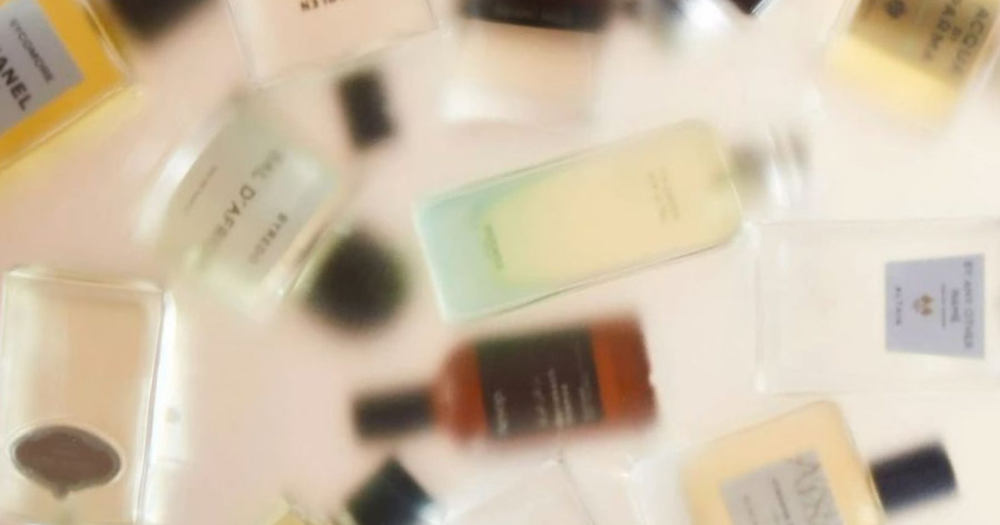
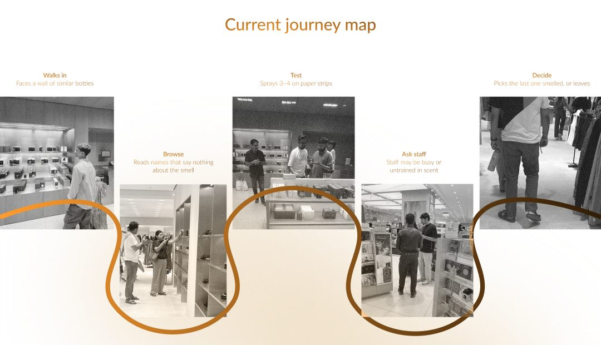
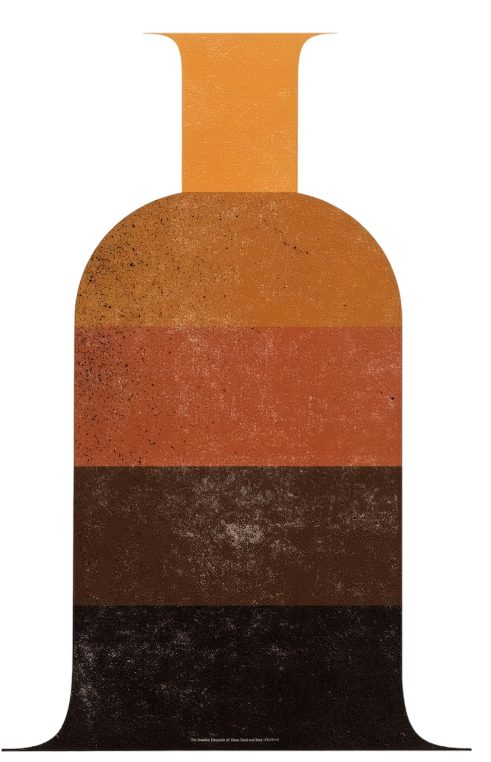
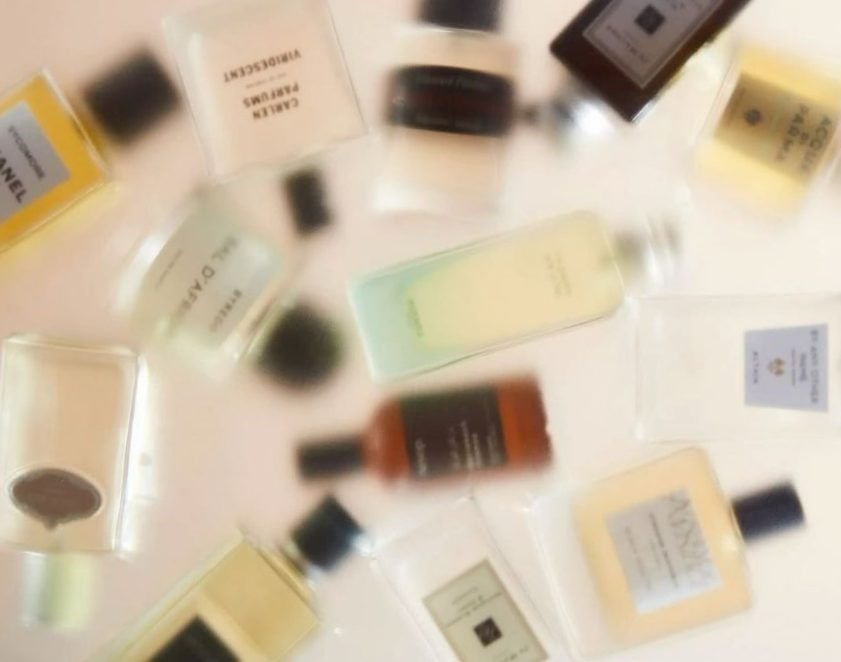
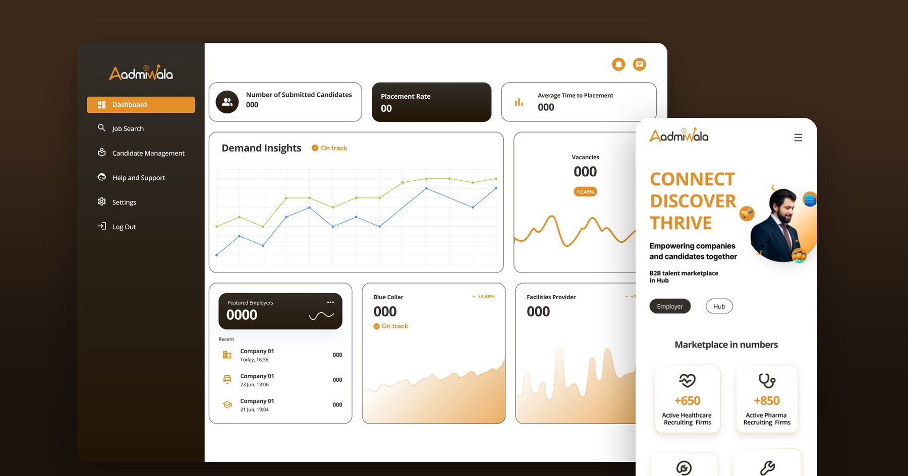

Syntra
An interactive perfume finder for people
who know the feeling, not the name

- Module
- Retail Tech
- Duration
- 2 weeks
- Team
- Utsav Sharma, Sijo Joseph, Rajat Chaple
- Built with
- ESP32, p5.js, VR worlds, AR scent tickets
Most people walk into a perfume store knowing a mood, not a name. Syntra lets shoppers find a scent through touch and feeling, in a guided physical-to-digital experience that ends with a scent they can keep.
After three sprays, every scent smells the same.
Choosing a perfume is one of the few purchases we make almost entirely through a sense we can’t explain. In store, shoppers face a wall of similar bottles with names that say nothing about the smell. After three or four sprays the nose tires and the scents blur together, so people pick the last one they smelled, or leave.
How might we help shoppers find a perfume that feels like them, even when they can’t put it into words?Design question
What happens in store today.
We observed shoppers in stores and mapped the five steps most of them follow.
- Walks inFaces a wall of similar bottles.
- BrowsesReads names that say nothing about the smell.
- TestsSprays 3–4 on paper strips.
- Asks staffStaff may be busy or untrained in scent.
- DecidesPicks the last one smelled, or leaves.

Five layers, from concept to experience.
- ConceptExploring touch, emotion and choice in fragrance retail.
- ResearchStore observations, contextual interviews, buyer journeys and scent perceptions.
- IdeationMapping the flow from physical input to digital output to an AR keepsake.
- PrototypingESP32 and p5.js, VR worlds and AR-enabled scent tickets.
- ExperienceFeeling turned into fragrance. A scent found, felt and kept.


Documentation in progress.
The prototype and findings are still being written up. See the full process file on Figma ↗
